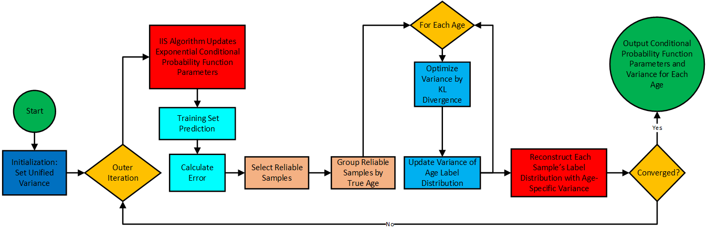

Thorough Analysis | From Unified Variance to Age-Specific Variance: Adaptive Label Distributions and Joint Optimization
This article presents a close reading of Xin Geng et al.’s paper Facial Age Estimation by Adaptive Label Distribution Learning(2014), systematically reviewing the method framework and providing key mathematical derivations. It shows the alternating optimization procedure of adaptive label distributions and age-specific variance with soft-label construction; the quasi-Newton optimization for updating the parameters of the conditional probability function; and the experimental setup and conclusions.
Paper link: Facial Age Estimation by Adaptive Label Distribution Learning
Prior article link: Thorough Analysis | From Single Labels to Label Distributions: A New Approach for Facial Age Estimation
Facial aging speed is not constant: children and the elderly change faster, while young and middle-aged adults change more slowly. The degree to which neighboring ages can “borrow information” should vary across age ranges. Label distribution learning with a fixed variance cannot capture this difference, so ALDL lets each age \(a\) learn its own variance \(\sigma_\alpha\) from data: narrow for fast-changing ranges, wide for slow-changing ones. The diffusion radius of soft labels becomes age-specific, fitting the age structure more finely and improving overall prediction, especially in high-age sparse regions.
Adaptive Label Distribution
Traditional label distribution learning uses the same variance for all ages, which conflicts with real aging rhythms: appearance changes faster in childhood and old age, and more slowly in young to middle age. Therefore, the same “neighbor borrowing” strength should not be uniform. Adaptive Label Distribution introduces age-specific variance: for each age \(\alpha\), it learns the width of its label distribution—sharper for fast-changing ages, smoother for slow-changing ones. Let \(\mathcal{Y}=\{y_1,\dots,y_c\}\). For a sample \(x\) with true age \(\alpha\), we model its soft label with a discrete Gaussian: \[ d_{y,x}(\sigma_\alpha)\;=\;\frac{\exp\!\big(-\tfrac{(y-\alpha)^2}{2\sigma_\alpha^2}\big)}{\sum_{y'\in\mathcal{Y}}\exp\!\big(-\tfrac{(y'-\alpha)^2}{2\sigma_\alpha^2}\big)}\,, \] where \(\sigma_\alpha\) is the distribution width (age-specific variance) for age \(\alpha\).
Age-specific Variance Estimation and Soft-label Reconstruction
The entire method is organized as an improved alternating scheme: start with a unified initial variance \(\sigma_0\) to convert the training set from single labels to soft labels; then update the conditional-probability parameters \(\theta\) using IIS; next, select reliable samples under the current model (e.g., those with absolute error \(e_i=\lvert \alpha_i-\hat\alpha_i\rvert\) not exceeding the round’s training \(\mathrm{MAE}\)), group them by chronological age, and update the variance \(\sigma_\alpha\) for each age \(\alpha\) using only reliable samples belonging to \(\alpha\). The cycle “learn \(\theta\) — adjust \(\sigma\) — reconstruct soft labels” repeats until the error converges.
To avoid notational ambiguity, we stipulate: \(p(y\mid x;\theta)\) denotes the model’s conditional distribution depending only on \(\theta\); \(d_{y,\alpha}(\sigma)\) denotes the normalized probability of a discrete Gaussian template over \(\mathcal{Y}\) with mean \(\alpha\) and standard deviation \(\sigma\), satisfying \(\sum_{y\in\mathcal{Y}}d_{y,\alpha}(\sigma)=1\), with the explicit form \[ d_{y,\alpha}(\sigma)\;=\;\frac{\exp\!\big(-\tfrac{(y-\alpha)^2}{2\sigma^2}\big)}{\sum_{y'\in\mathcal{Y}}\exp\!\big(-\tfrac{(y'-\alpha)^2}{2\sigma^2}\big)}\,. \]
Formally, given the \((k\!-\!1)\)-th round soft labels \(D_i^{(k-1)}=\big(d_{y,x_i}^{(k-1)}\big)_{y\in\mathcal{Y}}\), first perform the standard label-distribution learning update for \(\theta\): \[ \theta^{(k)} = \arg\max_{\theta}\sum_i \sum_{y\in\mathcal{Y}} d_{y,x_i}^{(k-1)} \log p(y\mid x_i;\theta) \]
\[ p(y\mid x;\theta) = \frac{\exp\!\Big(\sum_{r} \theta_{y,r}\,g_r(x)\Big)}{\sum_{y'}\exp\!\Big(\sum_{r} \theta_{y',r}\,g_r(x)\Big)} \]
where \(g_r(x)\) is the \(r\)-th feature component of sample \(x\).
Using \(\theta^{(k)}\), obtain point predictions \(\hat\alpha_i=\arg\max_y p(y\mid x_i;\theta^{(k)})\) and filter reliable samples. Then, for each age \(\alpha\), minimize the KL divergence between the Gaussian template and the model distribution on its reliable set \(I_\alpha\) to update the variance: \[ \sigma_\alpha^{(k)} \;=\; \arg\min_{\sigma>0}\;\sum_{m\in I_\alpha}\sum_{y\in\mathcal{Y}} d_{y,\alpha}(\sigma)\,\log\frac{d_{y,\alpha}(\sigma)}{\,p(y\mid x_m;\theta^{(k)})\,}. \]
The log-barrier method incorporates the constraint “\(\sigma>0\)” into the objective, yielding an unconstrained problem defined on \(\sigma>0\). Let \[ F_\alpha(\sigma)\;=\;\sum_{m\in I_\alpha}\sum_{y\in\mathcal{Y}} d_{y,\alpha}(\sigma)\,\log\frac{d_{y,\alpha}(\sigma)}{\,p(y\mid x_m;\theta^{(k)})\,}, \] then its barrier form is \[ \tilde F_{\alpha,\mu}(\sigma)\;=\;F_\alpha(\sigma)\;-\;\mu\,\log\sigma,\qquad \mu>0,\ \sigma>0, \] and the original constrained optimum is approached by gradually decreasing \(\mu\). The first and second derivatives of the resulting 1D objective are \[ \frac{\mathrm{d}\tilde F_{\alpha,\mu}}{\mathrm{d}\sigma} \;=\;\frac{\mathrm{d}F_\alpha}{\mathrm{d}\sigma}\;-\;\frac{\mu}{\sigma},\qquad \frac{\mathrm{d}^2\tilde F_{\alpha,\mu}}{\mathrm{d}\sigma^2} \;=\;\frac{\mathrm{d}^2F_\alpha}{\mathrm{d}\sigma^2}\;+\;\frac{\mu}{\sigma^2}. \]
For numerical implementation, write \(F_\alpha(\sigma)\) as a smooth 1D objective. Its first derivative can be expressed using \(q_y(\sigma)=d_{y,\alpha}(\sigma)\) and its log-derivative: \[ \frac{\mathrm{d}F_\alpha}{\mathrm{d}\sigma} \;=\;\sum_{y\in\mathcal{Y}} \Big(\sum_{m\in I_\alpha}\big[\log q_y(\sigma)-\log p(y\mid x_m;\theta^{(k)})+1\big]\Big)\,\frac{\mathrm{d}q_y(\sigma)}{\mathrm{d}\sigma}, \] \[ \frac{\mathrm{d}q_y(\sigma)}{\mathrm{d}\sigma} \;=\;q_y(\sigma)\,\frac{(y-\alpha)^2-\mathbb{E}_{q(\sigma)}[(Y-\alpha)^2]}{\sigma^3},\qquad \mathbb{E}_{q(\sigma)}[(Y-\alpha)^2]=\sum_{y}q_y(\sigma)\,(y-\alpha)^2. \]
After adding the barrier term, the 1D optimization \(\min_{\sigma>0}\tilde F_{\alpha,\mu}(\sigma)\) can be solved by Newton’s method with backtracking line search, warm-started from the previous \(\sigma_\alpha^{(k-1)}\); shrink \(\mu\) and repeat until the outer stopping criterion is met. Quasi-Newton methods or monotone bracketing strategies can also be used for the 1D search.
With \(\{\sigma_\alpha^{(k)}\}\) updated, propagate them to all samples to reconstruct soft labels \[ d_{y,x_i}^{(k)}\;=\;\frac{\exp\!\big(-\tfrac{(y-\alpha_i)^2}{2(\sigma_{\alpha_i}^{(k)})^2}\big)}{\sum_{y'}\exp\!\big(-\tfrac{(y'-\alpha_i)^2}{2(\sigma_{\alpha_i}^{(k)})^2}\big)}\,, \] and proceed to the next round. Stop when the MAE improvement between consecutive rounds falls below \(\varepsilon\). In this way, the \(\theta\)-update follows the standard maximum-likelihood form of label-distribution learning, while the \(\sigma\)-update lets the data adaptively decide “how much neighborhood information” each age should borrow. The ALDL flowchart is shown below.

Quasi-Newton–Driven Parameter Learning
The training objective for the conditional probability remains the same: minimize the distribution-level negative log-likelihood. It arises by rewriting the KL loss between distributions \[ \min_{\theta}\ \sum_{i} \mathrm{KL}\!\left(D_i^{(k-1)}\ \Big\|\ p(\cdot\mid x_i;\theta)\right) \]
\[ \mathrm{KL}\!\left(D_i^{(k-1)}\ \Big\|\ p(\cdot\mid x_i;\theta)\right) =\sum_{j} d^{\,k-1}_{y_j,x_i}\,\log\frac{d^{\,k-1}_{y_j,x_i}}{\,p(y_j\mid x_i;\theta)\,} \]
where \(i\) indexes samples; \(j\) indexes labels; \(d^{\,k-1}_{y_j,x_i}\) is the \((k\!-\!1)\)-th round soft-label weight of sample \(x_i\) on label \(y_j\); \(p(y_j\mid x_i;\theta)\) is the model’s predicted probability that \(x_i\) belongs to label \(y_j\) under parameters \(\theta\).
This is equivalent to minimizing the weighted cross-entropy because \[ \sum_i \mathrm{KL}(D_i^{(k-1)}\|p_i)=\underbrace{\sum_{i,j} d^{\,k-1}_{y_j,x_i}\log d^{\,k-1}_{y_j,x_i}}_{\text{constant w.r.t. }\theta}\;-\;\sum_{i,j} d^{\,k-1}_{y_j,x_i}\,\log p(y_j\mid x_i;\theta), \] so dropping the \(\theta\)-independent constant yields the negative log-likelihood \[ T(\theta)=\sum_{i}\log\!\sum_{j}\exp\!\Big(\sum_{r}\theta_{y_j,r}\,x_i^{(r)}\Big)\;-\;\sum_{i,j} d^{\,k-1}_{y_j,x_i}\,\sum_{r}\theta_{y_j,r}\,x_i^{(r)}, \] with \[ p(y_j\mid x_i;\theta)=\frac{\exp\!\big(\sum_{r}\theta_{y_j,r}\,x_i^{(r)}\big)}{\sum_{j'}\exp\!\big(\sum_{r}\theta_{y_{j'},r}\,x_i^{(r)}\big)}\,. \] Its gradient is \[ \frac{\partial T(\theta)}{\partial \theta_{y_j,r}} =\sum_{i}p(y_j\mid x_i;\theta)\,x_i^{(r)}-\sum_{i} d^{\,k-1}_{y_j,x_i}\,x_i^{(r)}. \]
The quasi-Newton iteration follows the standard derivation: for any smooth \(f(\theta)\), perform a second-order Taylor expansion at \(\theta_t\) \[ f(\theta_t+\Delta)\approx f(\theta_t)+\nabla f(\theta_t)^\top\Delta+\tfrac12\,\Delta^\top H(\theta_t)\Delta, \] whose minimizer satisfies the Newton equation \[ H(\theta_t)\Delta_N=-\nabla f(\theta_t), \] and update \[ \theta_{t+1}=\theta_t+\alpha\,\Delta_N, \] with \(\alpha\) chosen by 1D line search to satisfy the strong Wolfe conditions. Since forming and inverting \(H^{-1}\) is expensive, BFGS maintains a symmetric positive-definite matrix \(B_t\approx H(\theta_t)^{-1}\) to approximate the Newton direction: \[ s_t=-B_t\,\nabla f(\theta_t),\qquad \theta_{t+1}=\theta_t+\alpha_t s_t, \] \[ y_t=\nabla f(\theta_{t+1})-\nabla f(\theta_t),\quad \rho_t=\frac{1}{y_t^\top s_t}, \] \[ B_{t+1}=(I-\rho_t s_t y_t^\top)B_t(I-\rho_t y_t s_t^\top)+\rho_t s_t s_t^\top, \] and \(\alpha_t\) is chosen to satisfy \[ f(\theta_t+\alpha_t s_t)\le f(\theta_t)+c_1\alpha_t\,\nabla f(\theta_t)^\top s_t,\qquad \big|\nabla f(\theta_t+\alpha_t s_t)^\top s_t\big|\le c_2\big|\nabla f(\theta_t)^\top s_t\big| \] with \(0<c_1<c_2<1\) for efficiency and stability.
Applied to \(T(\theta)\) here: in the \(k\)-th outer round, warm-start with \(\theta_{k,0}=\theta^{(k-1)}\) and \(B_0=I\). At the \(l\)-th inner iteration, \[ s_l=-B_{l-1}\nabla T(\theta_{k,l-1}),\qquad \theta_{k,l}=\theta_{k,l-1}+\alpha_l s_l, \] \[ y_l=\nabla T(\theta_{k,l})-\nabla T(\theta_{k,l-1}),\qquad \rho_l=\frac{1}{y_l^\top s_l}, \] \[ B_l=(I-\rho_l s_l y_l^\top)B_{l-1}(I-\rho_l y_l s_l^\top)+\rho_l s_l s_l^\top, \] where \(\alpha_l\) is determined by a strong Wolfe line search. Compared with the previous section, the only change is replacing IIS with the quasi-Newton scheme “approximate Newton direction + BFGS recursion + strong Wolfe line search”.
Experiments and Analysis
The paper uses two standard datasets and protocols: FG-NET with LOPO (leave-one-person-out) and MAE evaluation, containing 82 subjects and 1002 images, ages 0–69; and MORPH (Album II) with 10-fold cross-validation and MAE±std, ages ~16–77. Feature dimensionality is unified at 200. FG-NET uses an Appearance Model to extract joint shape + texture features and truncates to 200 dimensions; MORPH uses BIF and reduces to 200 dimensions via MFA for comparability. Baselines are grouped along two axes: adaptivity and solver type. Fixed-variance label distribution learning (LDL) includes IIS-LDL and BFGS-LDL; adaptive-variance ALDL includes IIS-ALDL and BFGS-ALDL. We also ablate soft-label shapes: Gaussian, Triangle, and the degenerate Single (no diffusion, i.e., a single label).
Overall, adaptive variance markedly reduces MAE, with a more pronounced advantage in age ranges where high-age samples are sparse (ALDL > LDL). Under the same settings, replacing IIS with a quasi-Newton inner optimizer yields faster convergence and lower error; BFGS-ALDL typically achieves both the lowest MAE and the shortest training time among the four combinations, with most gains occurring in the first several outer iterations. In terms of distribution shape, Gaussian is generally slightly better than Triangle, and Single is clearly worse—consistent with the intuition that neighboring ages should borrow information but not be overly diluted. The learned age-specific variances vary with age, showing the trend of “narrow for fast-changing ranges, wide for slow-changing ranges,” which mechanistically explains the performance gains.